Teacher help
Everything in PopSpell's teacher area, step by step. The pictures show a demo class with made-up pupils.
1. Getting started
- Go to popspell.com/#/teacher (or press 👩🏫 Teacher at the top of PopSpell once you've signed in before).
- Press Sign in with Google and choose the Google account your invitation was sent to.
- Pick your class in the Class box at the top right. Everything below it is for that class.
Pupils never sign in: they type their first name (or a code you give them) on their device.
| Tab | What it's for |
|---|---|
| 📚 Library | Find any work by level, subject and strand, then test, assign or print it. |
| 🟢 Live | See each pupil working during a lesson, and who has asked for help. |
| 🧭 Next steps | Each pupil's next lesson, how they did last time, and a suggestion to plan in one click. |
| 📘 Programme | A lesson-by-lesson programme for each pupil, with a plan, sheets and CfE outcomes for every lesson, the level expected for their year group, and ready lessons for their gaps. |
| 📌 Assign | Choose the work each pupil (or everyone) sees on their device. |
| 🗓️ Plans & sheets | Schedule work for dates, print worksheets, and enter marks from paper. |
| 📝 Diary | Private notes on each lesson and what to do next. |
| 👧 Pupils | The class list, assessments, home logins, parent pages, reports, calendar and records. |
| 🏫 Classes | Make classes, get the class link, and set the accent. |
| 👩🏫 Teachers | Site admins only: invite and remove teachers. |
2. Curriculum for Excellence: levels, codes and expectations
Everything in PopSpell is matched to Scotland's national curriculum, Curriculum for Excellence (CfE). This section sets out the official guidance from Education Scotland and the Scottish Government, so you can see what is expected of a child, where they are, and how PopSpell's work fits.
The levels and when children are expected to reach them
| Level | Stage | Expectation |
|---|---|---|
| Early | Nursery and P1 | Most children achieve it by the end of P1. |
| First | P2 to P4 | Most children achieve it by the end of P4. |
| Second | P5 to P7 | Most children achieve it by the end of P7. |
| Third | S1 to S3 | Most young people achieve it by the end of S3. |
These are the stages most children are at. Some get there sooner and some need longer. Each level spans several years, so a P3 pupil is expected to be working through First level, not to have finished it.
How a level is judged
Whether a child has achieved a level is the teacher's professional judgement, using the benchmarks and a wide range of evidence. The evidence includes everyday work, conversations with the child, planned assessments and standardised assessment. The national guidance says a child has achieved a level when they have:
- shown a breadth of learning across the experiences and outcomes for the level;
- responded consistently well to its level of challenge, and moved on to the next level in some aspects;
- applied what they have learned in new and unfamiliar situations.
They don't need to master every benchmark before moving on, but there should be no major gaps across the main areas. The guidance also says benchmarks should not be ticked off one by one.
How schools report it nationally
- Achievement of CfE Levels (ACEL): each year, teachers record whether pupils in P1, P4 and P7 (and S3) have achieved the expected level. That means Early by P1, First by P4 and Second by P7, in reading, writing, listening and talking, and numeracy. The Scottish Government publishes the national figures.
- Scottish National Standardised Assessments (SNSA): short online assessments in literacy and numeracy, taken once a year in P1, P4, P7 and S3. They give teachers diagnostic information. They are one piece of evidence among many, not a pass or fail.
Reading a CfE code
Each experience and outcome has a code, such as MNU 1-03a:
| Part | Meaning |
|---|---|
| LIT / ENG | Literacy (the responsibility of all teachers) / English (taught in English lessons) |
| MNU / MTH | Numeracy (the responsibility of all teachers) / Mathematics |
| 0, 1, 2, 3 | The level: 0 Early, 1 First, 2 Second, 3 Third |
| 03 | The organiser (the area). For example, 02 and 03 are number and number processes, and 21 is writing tools such as spelling. |
| a, b, c | Which statement within that area |
Some statements have more than one code, such as LIT 0-01a / LIT 0-11a / LIT 0-20a, because the same outcome covers listening, reading and writing.
Some useful ones:
- LIT 1-21a: spelling at First level.
- LIT 1-22a: punctuation and linking sentences.
- ENG 1-17a: answering questions about a text.
- MNU 0-03a: adding and taking away at Early level.
- MNU 2-07a: fractions and percentages of amounts.
The areas (organisers)
Literacy and English: listening and talking, reading and writing. Each has enjoyment and choice, tools (such as phonics, spelling, punctuation and handwriting), finding and using information, understanding and analysing texts, and creating texts.
Numeracy and mathematics: estimation and rounding; number and number processes; multiples, factors and primes; fractions, decimals and percentages; money; time; measurement; patterns and relationships; expressions and equations; shape; angle, symmetry and position; data and analysis; chance and uncertainty.
How PopSpell matches this
- Every spelling list, activity, story, dictation and ready lesson shows its level and its CfE codes. In the Library you can choose a level or search for a code (type MNU 1-03a).
- Ready lessons are written from the benchmarks: their success criteria are the benchmark statements for that area, in "I can…" form (see Ready lessons).
- Every lesson plan in the Programme lists the codes it covers, so your planning and notes line up with what schools report.
Expected level against where a pupil is working
When a pupil's year group is filled in (on their card in 👧 Pupils), the Programme shows the level expected for their year group, next to the level of the work they're on, for literacy and maths:

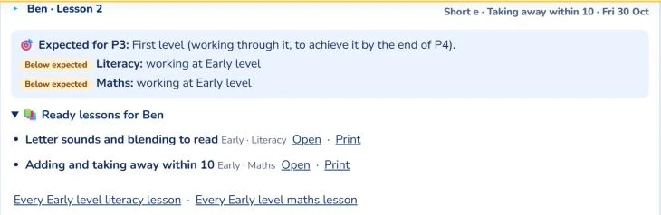
| It says | What it means | What to do |
|---|---|---|
| Below expected | The work they're on is from an earlier level than their year group expects. For example, a P3 pupil still on Early level work. | Close the gaps at the level they're working at, starting from their checks. Ready lessons suggests lessons for exactly those gaps. |
| As expected | They're working within the level expected for their year group. | Keep going through the level. Watch for any one area falling behind. |
| Beyond expected | They're working at a later level than expected. | Keep challenging them, and make sure there are no gaps left behind at the earlier level. |
This compares the level of the work they're on in PopSpell with the national expectation for their age. It is a guide for planning. It isn't a formal judgement that a level is achieved: that rests on the evidence described above.
Changes coming
Education Scotland's Curriculum Improvement Cycle is refreshing the curriculum. The refreshed curriculum is due to be adopted in schools from August 2028. It replaces the experiences and outcomes and benchmarks with a "Know, Do, Understand" model. PopSpell uses the current codes and benchmarks, and will be updated when the new ones are published.
↑ Back to the top3. Set up a class
- Open 🏫 Classes, type a name (for example Tuesday 4pm group) and press ＋ Make class.
- Each class has a class code and a class link. Open the link once on each pupil's device, or have the pupil type the code on PopSpell's home page. The device stays in the class after that.
- Choose the accent for sounds. Scottish (the default) treats the r as its own sound, so car is c·a·r. English treats ar, er, ir, or and ur as one sound, so car is c·ar. Pupils can't change it.
- Tick Pupils only see the work I set if you'd like the class's devices to show only the work you assign, not the whole library.

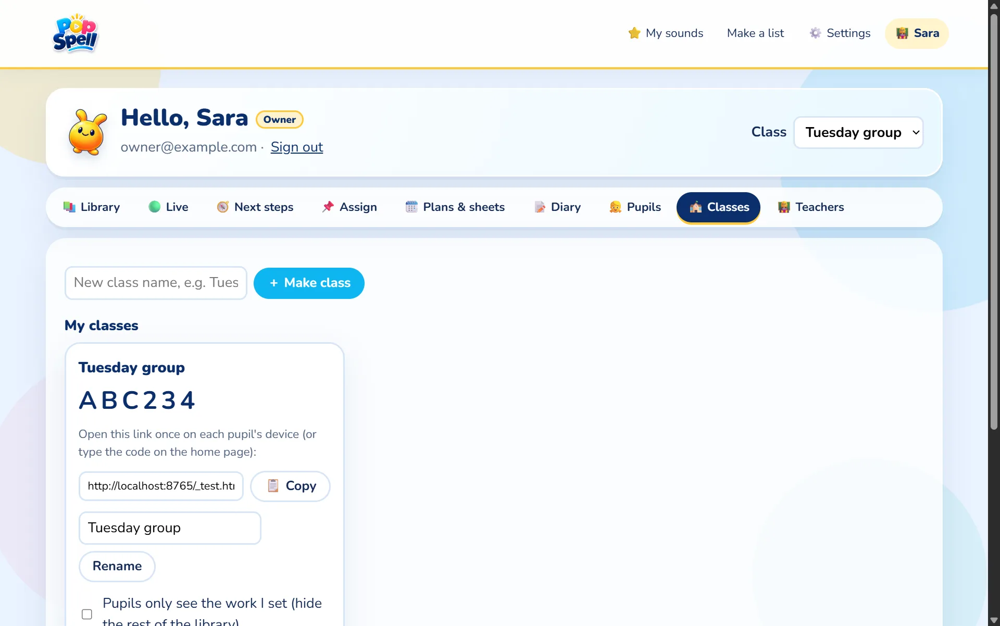
4. Add pupils
- Open 👧 Pupils.
- Type the pupil's name exactly as they'll type it on their device (first name and an initial, such as Ava M, works well). Add a parent's email if you have one, then press Add pupil.
- For a brand-new pupil, press 🌟 New pupil: profile and assessment instead: it adds them and starts their assessment (see section 4).

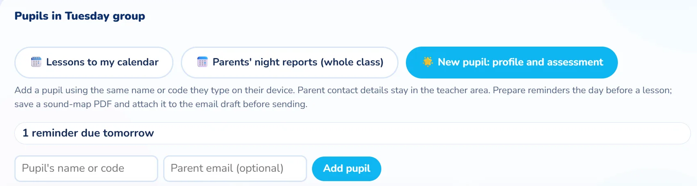
Each pupil's card
Every pupil has a card with their details. After changing anything, press Save details at the bottom of the card.
- Parent email and Parent requested reminders: tick this only if the parent asked for lesson reminders.
- Next lesson and Time: used by Next steps, reminders, the parent page and the calendar.
- Homework list: the list the pupil practises at home, also printed on their homework sheet.
- 🏠 Home login and 👪 Parent page: see section 10.

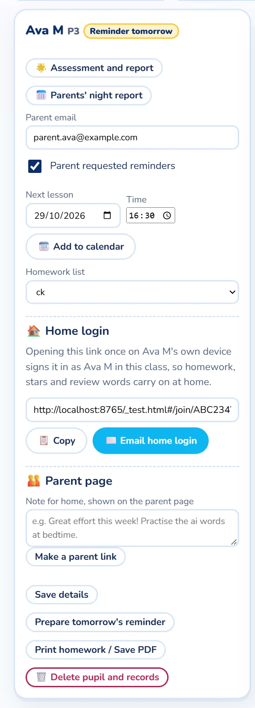
5. Starting assessment: Pip's Sound Quest
A 15 to 25 minute assessment the child plays as a game: five short islands for listening, reading, a story, spelling and numbers. There are no marks on screen, and each island stops by itself when it gets too hard, so the child is never left struggling.
- Press 🌟 New pupil: profile and assessment (or 🌟 Assessment and report on an existing pupil's card).
- About the child: name, year group, parent email, anything to bear in mind (for example dyslexia or tiring quickly) and what they enjoy. Only teachers can see this.
- Pip's Sound Quest: open the link on the device the child will use. It joins your class, signs in as the child and opens Pip's map. Islands can be done across more than one lesson; press ↻ Check again to see which are finished.
- Report and first lessons: read the findings, press 📄 View the assessment report to print it or save a PDF, and 🧭 Plan the first lessons to put the starting lists on the child's schedule.

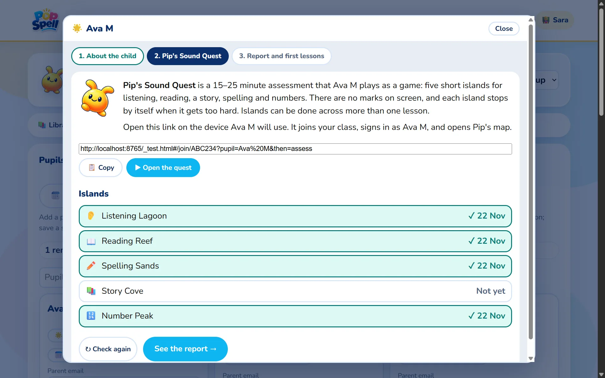

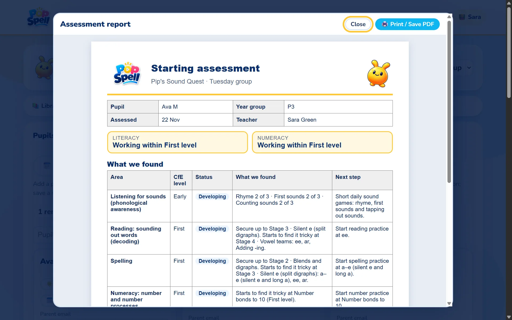
Tip: CfE levels in the report are a starting guide. Confirm them with your own judgement against the benchmarks.
↑ Back to the top6. Teaching live
Open 🟢 Live during a lesson. Each pupil who starts work appears straight away, with how far through they are and how many they got right first time.
- Needs help (orange): the pupil pressed the help button. Press Done once you've helped.
- Finding it hard: several misses in a row.
- Quiet for a while: nothing for a few minutes.

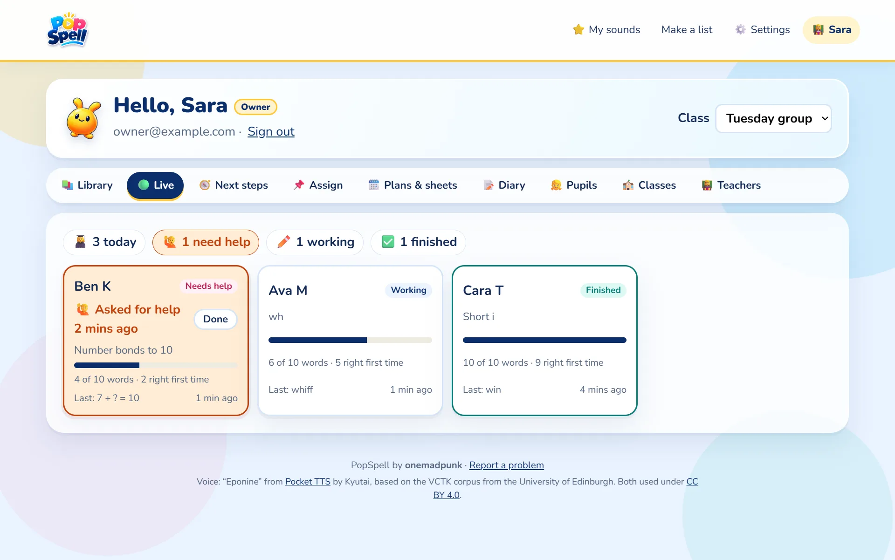
7. Next steps
🧭 Next steps lists each pupil's next lesson, what's planned, how they did last time, the sounds or skills to work on, and a suggestion that follows the teaching order.
- Check the suggestion (for example Move on to ck: 90% right first time on wh).
- Keep it or choose different work, check the date, and press Plan it. It goes on the pupil's schedule for that date and becomes their homework list.

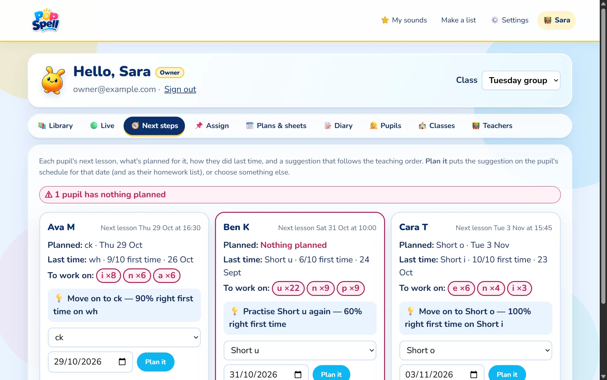
8. Lesson programme
📘 Programme gives each pupil a lesson-by-lesson programme. Every lesson mixes work with you, on the device and on paper, and the plan names its Curriculum for Excellence experiences and outcomes.
- Open a pupil and check the suggested start. It comes from Pip's Sound Quest, a starting check or their last results. For maths with nothing yet, it starts at their year group's level. Change the spelling list or maths if you know better, and choose Literacy and maths, Literacy only or Maths only. Then press Start the programme.
- Choose your Lesson length (30, 45, 60 or 90 minutes). The plan shares the time out to fit. Shorter lessons leave out the warm-up and extras first.
- Before the lesson, press 📌 Put on … device. The lesson's online work appears on the pupil's device for that date, and their spelling list becomes their homework. Press 🖨️ Print lesson pack for the lesson plan and every sheet the lesson uses: sound map, story, maths with answers, and dictation.
- After the lesson, press ✅ Lesson done. PopSpell shows how they did on the spelling and maths since the last lesson, and suggests moving on at 80% right first time. You decide, and the next lesson is ready.
Each lesson has a learning intention and success criteria to share with the pupil. The plan follows the advice in Making Maths Count and from Reading Schools:
- a few minutes of number facts the pupil has already secured, to keep them fluent;
- a prompt to talk about their thinking;
- a story they choose, for the joy of reading;
- an idea for home.
At the top of each pupil's programme you'll see the level expected for their year group next to the level they're working at (see expected level against where a pupil is working). Below that is a short list of ready lessons for their gaps (see Ready lessons).
Under Coming up, and lessons so far you can see the next three lessons, every lesson so far, and change or stop the programme.

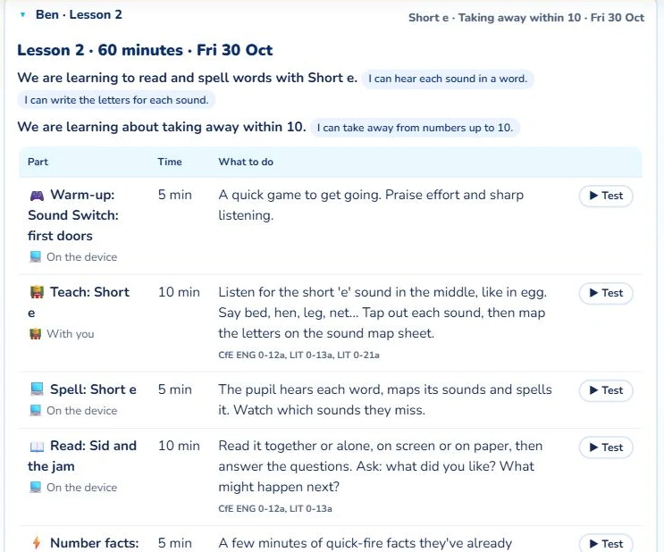
9. Ready lessons for any gap
PopSpell has a ready lesson for every area of the CfE literacy and numeracy benchmarks, at Early, First and Second level: 100 lessons in all. When a pupil is behind in an area, you can teach it straight away without making up a lesson.
Each lesson is about 30 minutes and has:
- a learning intention;
- success criteria taken from the benchmarks;
- its CfE codes and the words to use;
- four parts: Start (5 minutes), Teach (10), Practise (10, with PopSpell's online work and sheets where they fit) and Check (5);
- an idea for home.

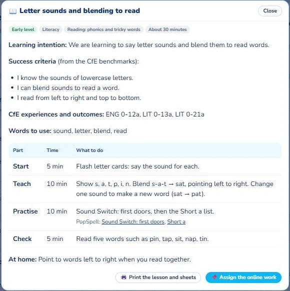
Finding a lesson
- In 📚 Library, choose the level and subject, and set Type to Ready lesson. Ready lessons also come first in every strand.
- Or, in 📘 Programme, open a pupil. Ready lessons for … lists the lessons for the gaps their Sound Quest and starting checks found, and for the work they're on now. Below it are links to every lesson at the level they're working at.

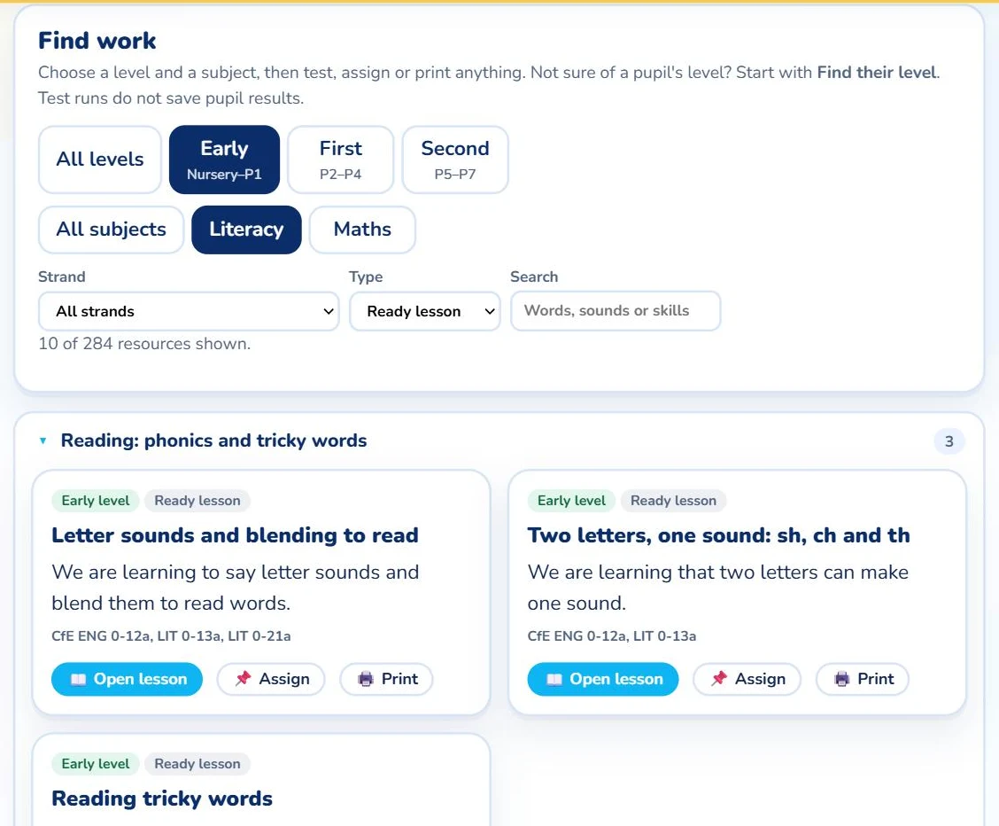
Using a lesson
- 📖 Open lesson shows the whole plan, with links to test each piece of online work.
- 🖨️ Print prints the lesson plan with a notes box, then a sheet for each piece of work it uses, with answers. You can untick sheets you don't need.
- 📌 Assign puts the lesson's online work on pupils' devices.
10. Library and Assign
Library
📚 Library has everything in PopSpell in one place, sorted the way you'd look for it:
- Choose a level: Early (nursery to P1), First (P2 to P4) or Second (P5 to P7).
- Choose a subject: Literacy or Maths. The work appears in strands, such as Spelling, Reading: understanding stories, Number, Time or Fractions.
- To narrow it down further, pick one Strand or a Type (spelling list, activity, story, game, dictation or paper sheet), or search for a word, sound or skill.
Not sure of a pupil's level? Find their level, at the top, has Pip's Sound Quest and the starting checks. The library remembers your last choices on that device.
Every card shows its level and type, and has three buttons:
- ▶ Test opens it as a pupil sees it. Test runs never save results.
- 📌 Assign sets it for pupils in the class chosen at the top of the page. Tick their names or Everyone, or type a new name.
- 🖨️ Print makes a paper version. Spelling lists have five sheet types. Activities, stories and dictation print a fresh set of questions with an answers page. For listening work and dictation, the adult's page has everything to read aloud. Press 🔀 New questions for a different set. Games are online only.

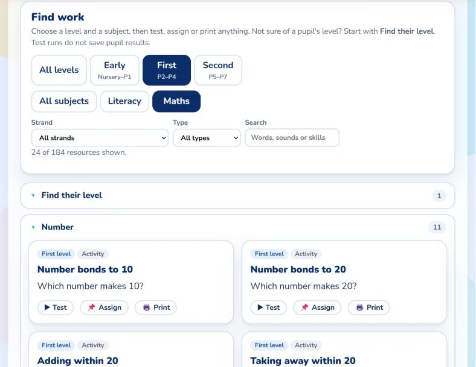

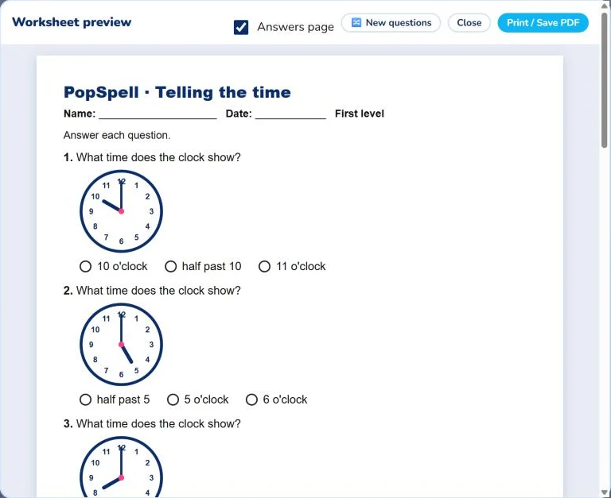
Assign
- Open 📌 Assign. (Or press 📌 Assign on any card in the Library.)
- Type a pupil's name (exactly as they type it) or Everyone for the whole class, choose the work, and add it. You can also paste a link from Make a list for your own words.
- Use ▶ Test online first if you'd like to check it.

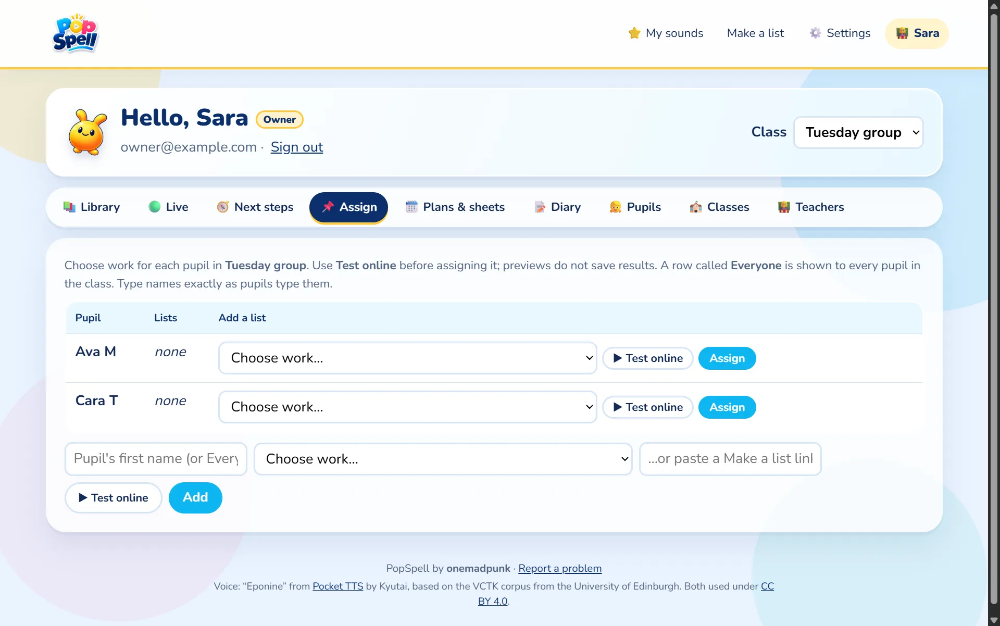
11. Plans and worksheets
- Schedule work: choose a pupil, a list or activity and the dates it should appear. Test it first if you like.
- Paper worksheets: choose a pupil, list and sheet type, then 👀 Preview sheet and 🖨️ Print / Save PDF. After the child has done it, press ✍️ Enter marks so the results join their progress.
- Letter formation: Print letter formation (a–z) prints handwriting sheets on four-line ruling.
- Quick game: give one pupil a game for today only.

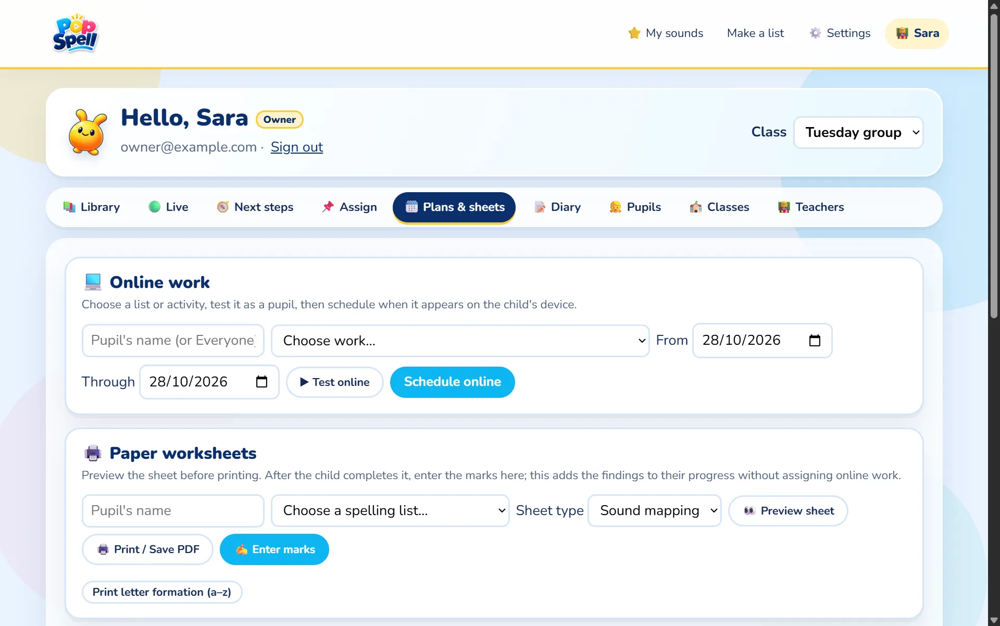
12. Lesson diary
- Open 📝 Diary, choose the pupil and the lesson date.
- Press Use latest result as a starting note if it helps, then write what they practised and what to do next.
- Choose a next list and date to put it on their schedule automatically, then press Save diary entry.
Diary notes are private: only teachers and site admins can see them.

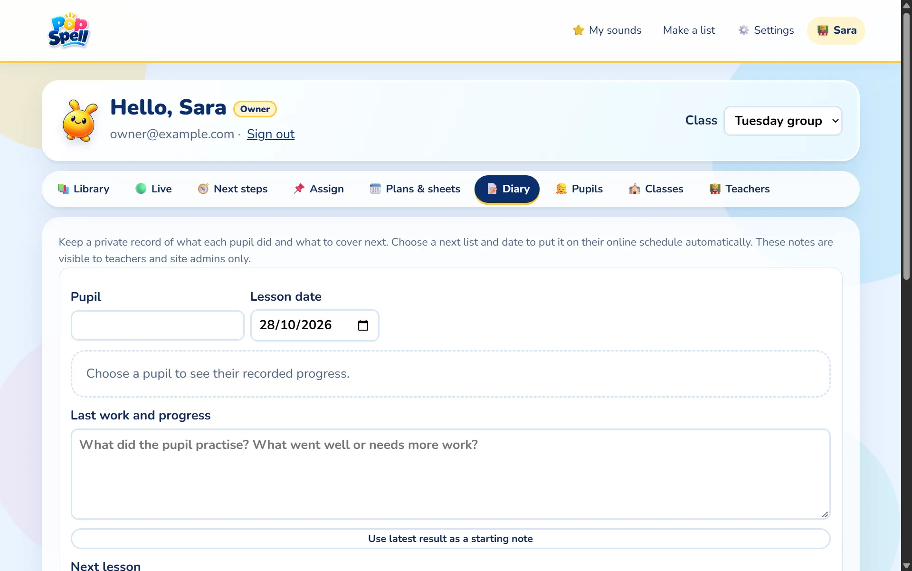
13. Home learning and parents
Home login
Each pupil's card has a 🏠 Home login link. Opening it once on the child's own device signs it in as that child in your class, so homework, stars and review words carry on at home.
- Press ✉️ Email home login on the pupil's card.
- A ready-made PopSpell email appears. Press 📋 Copy email, then ✉️ Open email app: the parent's address and subject are filled in. Paste the email in and send it.

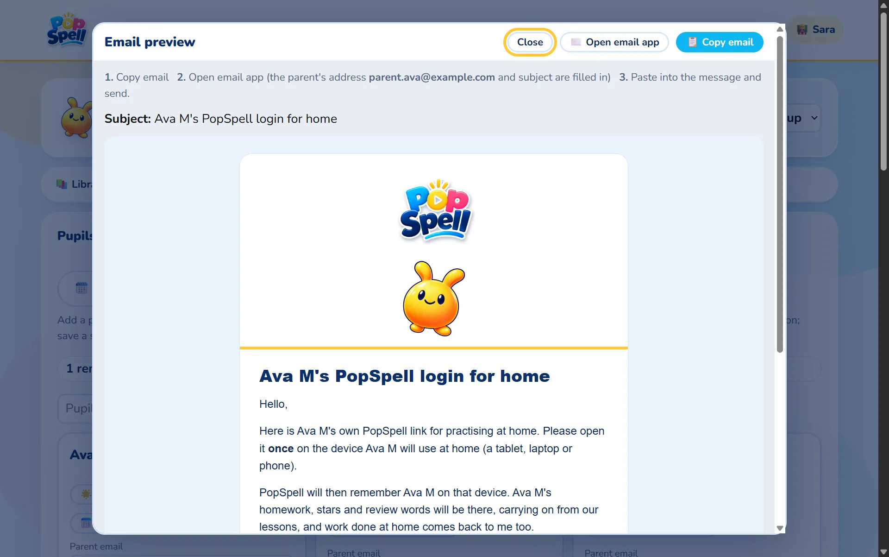
Parent page
Press Make a parent link on the pupil's card for a private page showing the child's progress, the sounds to practise and your note for home. It updates itself as the child works. Share the link however you like. Make a new link stops the old one working; Turn off removes the page.
Lesson reminders
If a parent asked for reminders, tick Parent requested reminders and set the next lesson. The day before, the card shows Prepare tomorrow's reminder: it makes the email for you to send, with an Add to Google Calendar link for the parent. Print the homework sheet first and attach the PDF if there is one.
↑ Back to the top14. Progress and reports
Further down the 👧 Pupils tab, choose a period in Show (a week up to everything) to see:
- Each pupil's results: lists done, words right, the skills to practise and their recent work.
- The Curriculum for Excellence overview: each pupil's status in each organiser. Secure means 85% or more right first time on 10 or more questions over 2 or more days; Developing means 60% or more.
- 📄 Progress report: a one-page printable report for the period.
- ⬇ Download every word (spreadsheet): every word and question, for Excel or Google Sheets.

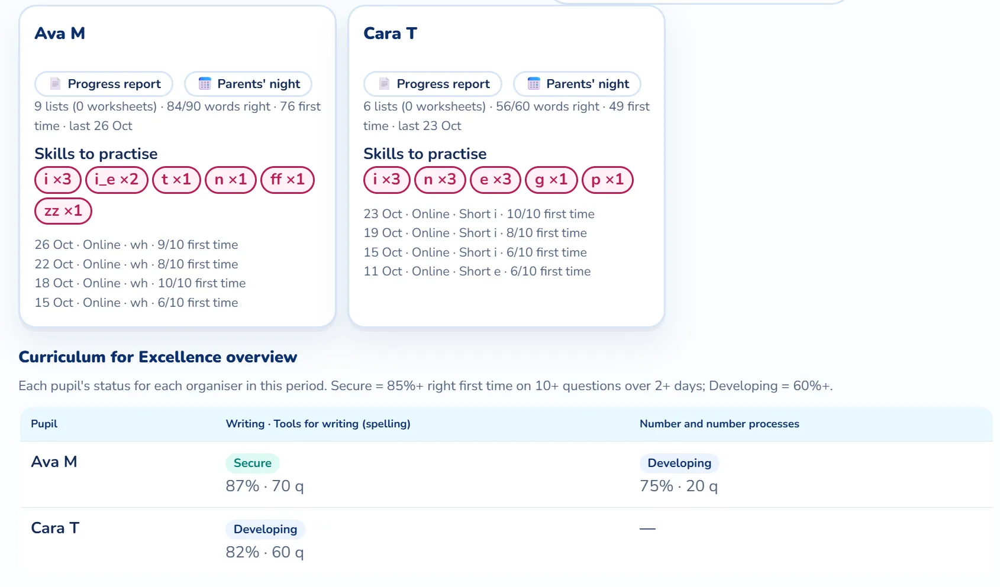
15. Parents' night reports
A report covering a whole year (or since the last parents' night), with month-by-month charts, the starting assessment against now, each area's trend, strengths, areas needing further support and next steps.
- For one child, press 📅 Parents' night report on their card. For everyone, press 📅 Parents' night reports (whole class) at the top: one child per page.
- Choose what it covers: this school year, since the last parents' night report, the last 12 months or since a date.
- Type a teacher's comment, or leave it blank to write by hand.
- Press 🖨️ Print / Save PDF. Leave save today as the latest report ticked, so next time the report shows what's changed since.

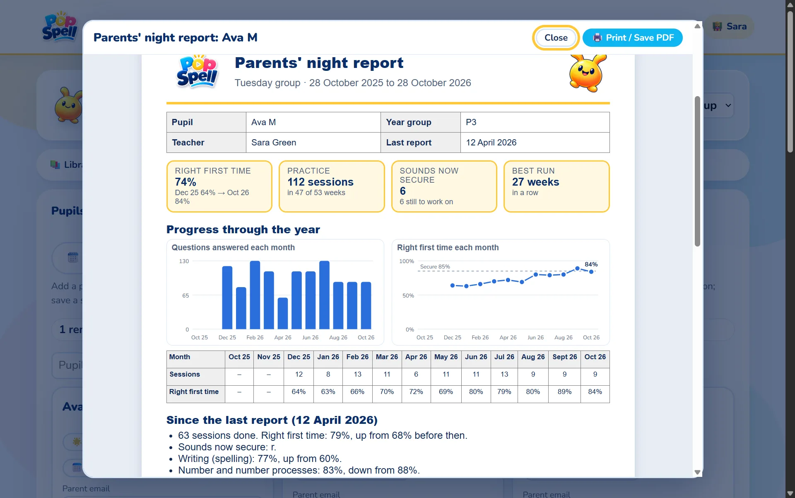
Tip: areas shaded pink in "How each area is going" need support or have slipped: a good place to start the conversation.
↑ Back to the top16. Calendar
- Set each pupil's Next lesson date and time on their card and save.
- Press 🗓️ Lessons to my calendar at the top of the Pupils tab (or 🗓️ Add to calendar on one card).
- Choose the lesson length and whether it repeats every week until the summer holidays.
- Press 🔄 Sync to my Google Calendar. The first time, Google asks your permission. After that, saving a lesson date updates your calendar too.
For Outlook or Apple Calendar, press ⬇ Download and open the file. If a date changes, add it again: the lesson moves instead of appearing twice.

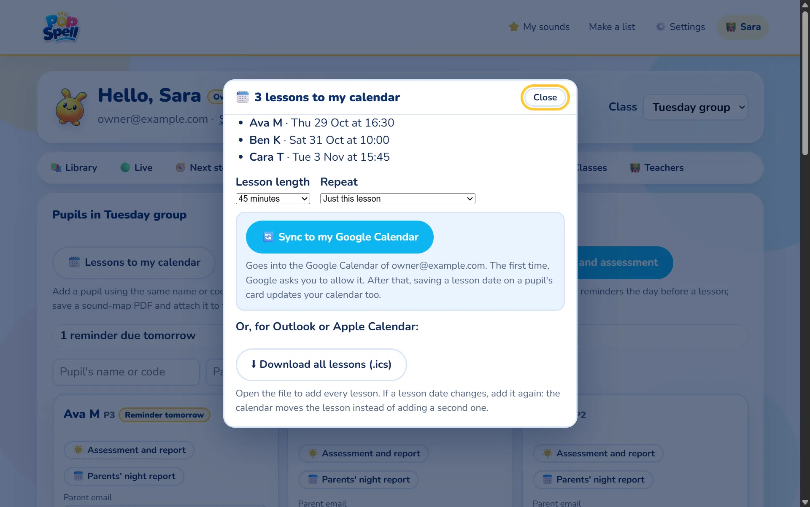
"Google hasn't verified this app"? Until Google finishes checking PopSpell's calendar access, press Advanced, then Go to PopSpell, then allow access. This only appears for calendar sync, never for signing in.
↑ Back to the top17. Old records and deleting a pupil
PopSpell's privacy page promises to delete a child's records within 12 months of their last lesson. Once a term:
- At the bottom of the Pupils tab, press Check for records over 12 months old.
- Anyone with no lessons or results for over a year is shaded and listed first. Press 🗑️ Delete and type the child's name to confirm.
To remove a pupil at any time, press 🗑️ Delete pupil and records on their card. This removes their results, saved progress, plans, lesson notes, parent page, roster details and calendar lesson. It can't be undone.

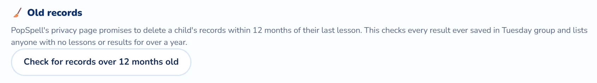
18. What pupils see
- Everything is read aloud: Pip says what's in his speech bubble (tap Pip to hear it again), every question is read out with 🔊 Hear it to repeat it, answers made of words have their own 🔊, and right or wrong answers are spoken. Start pages just have Pip and one big ▶ Start; levels and tips show for teachers only.
- Home page: Pip welcomes them, shows their journey through the sound stages, their work for today, review words, My sounds, My bests and their stories.
- Spelling: one page per word with almost nothing to read. The word appears with its sound markings while it's spoken, then hides after 3 seconds (or as soon as the child presses a key). 👀 See it again brings it back. The child types it, presses ✓, and the result and a big Next ➜ appear on the same page. New-word challenges are never shown first: the child presses 🔊 Listen.
- Reading aloud: pupils choose 🐢 Slow, 🙂 Steady or 🐇 Normal so they can read along. Each sentence is highlighted as it's read.
- Games such as Sound Hopper, Sound Switch and Counting Canopy, with glow seeds to build Pip's Forest.
- Pip's Sound Quest for the starting assessment.

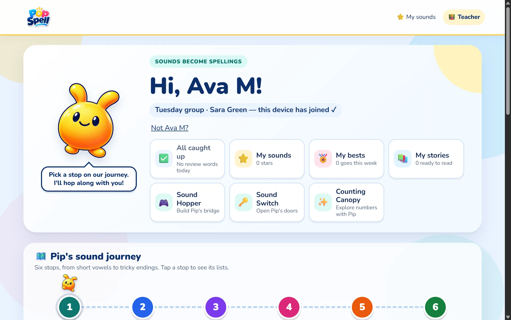

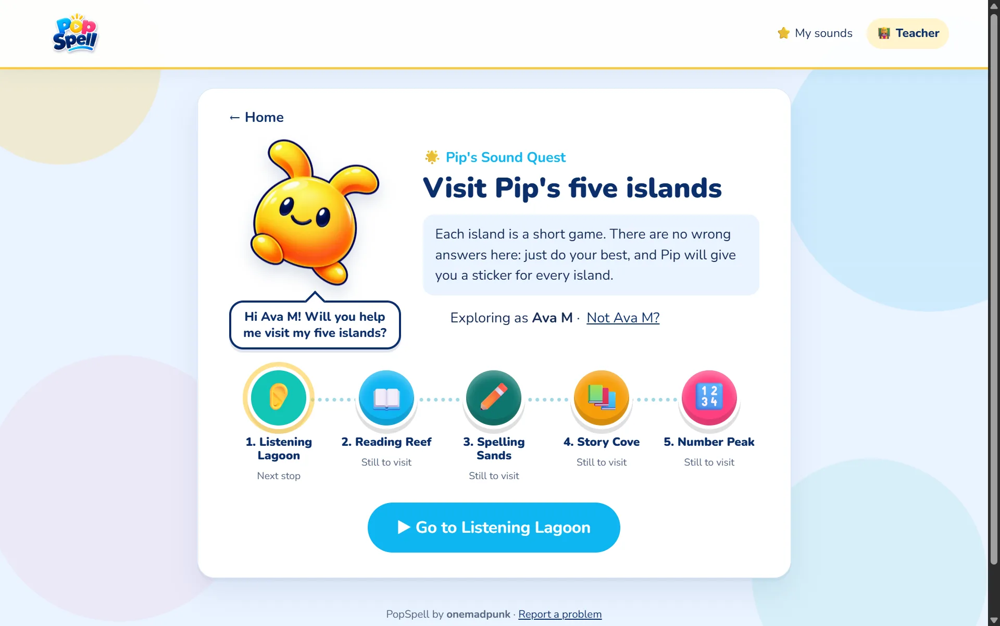
19. Questions and fixes
- A pupil's results aren't showing.
- Check their name on the device matches the roster exactly, and that the device has joined your class (the home page says "this device has joined ✓"). Opening their home login link on the device fixes both.
- A pupil's stars and progress are missing at home.
- Send the home login email and open the link once on the home device. Progress then follows the child between devices.
- "You haven't been invited yet."
- You're signed in with a different Google account from the one invited. Sign out and choose the invited account, or ask a site admin to invite this one in Teachers.
- I changed something and can't see it.
- Refresh the page. On a pupil's device, close PopSpell and open it again.
- The voice is too fast for reading along.
- The pupil presses 🐢 Slow above the story. It's remembered on that device.
- Does any of this cost anything?
- No. PopSpell is free, emails are sent from your own account, and the calendar uses your own Google Calendar.
- Something's wrong or confusing.
- Use Report a problem at the bottom of any PopSpell page.